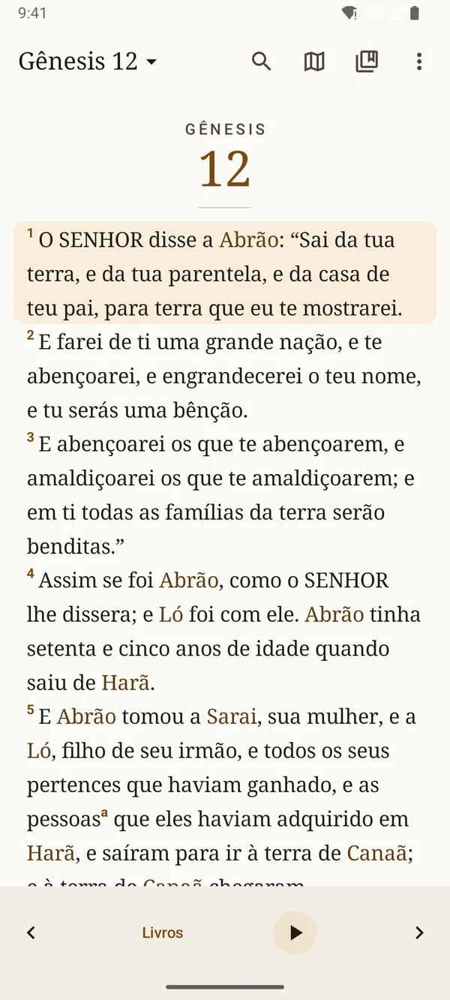

Leitura
Uma Bíblia impressa, na tela.
Texto serifado, página de rosto com gravuras de Gustave Doré, itálicos do tradutor, palavras de Jesus em vermelho e notas de rodapé. Deslize para virar o capítulo; as barras somem enquanto você lê.
- Bíblia Livre, Bíblia Portuguesa Mundial e Nova Bíblia Viva
- Comparação de traduções em cada versículo
- Destaques em cinco cores, favoritos e notas
